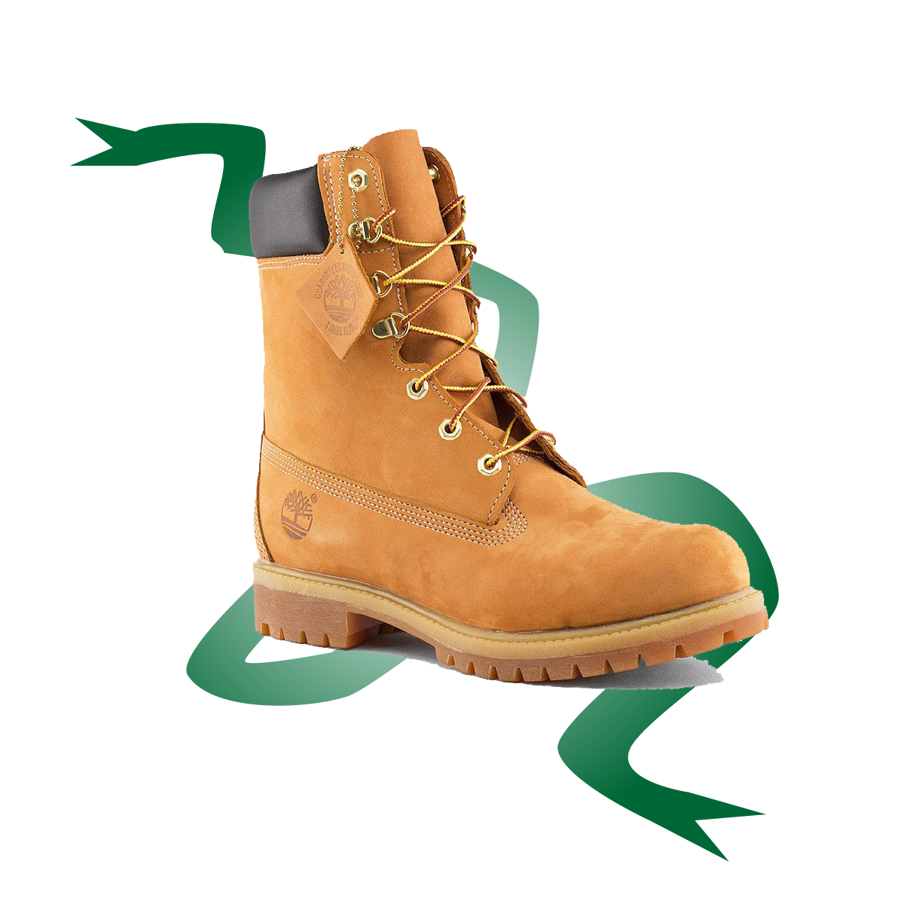

Eco-Friendly Terra Men's Boot
$210.00 CAD
Style A27Y8220
Our Eco-Terra lightweight waterproof boots take cues from our 6-Inch Premium flagship boots, with a few key updates. Pull-on loops make for easier on/off, while stacked outsoles and creative leather finishes infuse these boots with streetwise style.
Premium leather uppers from a tannery rated Silver
TimberDry™ waterproof membranes
Padded collars
Linings are made from 50% PET (recycled plastic bottles)
Laces are made from 100% PET